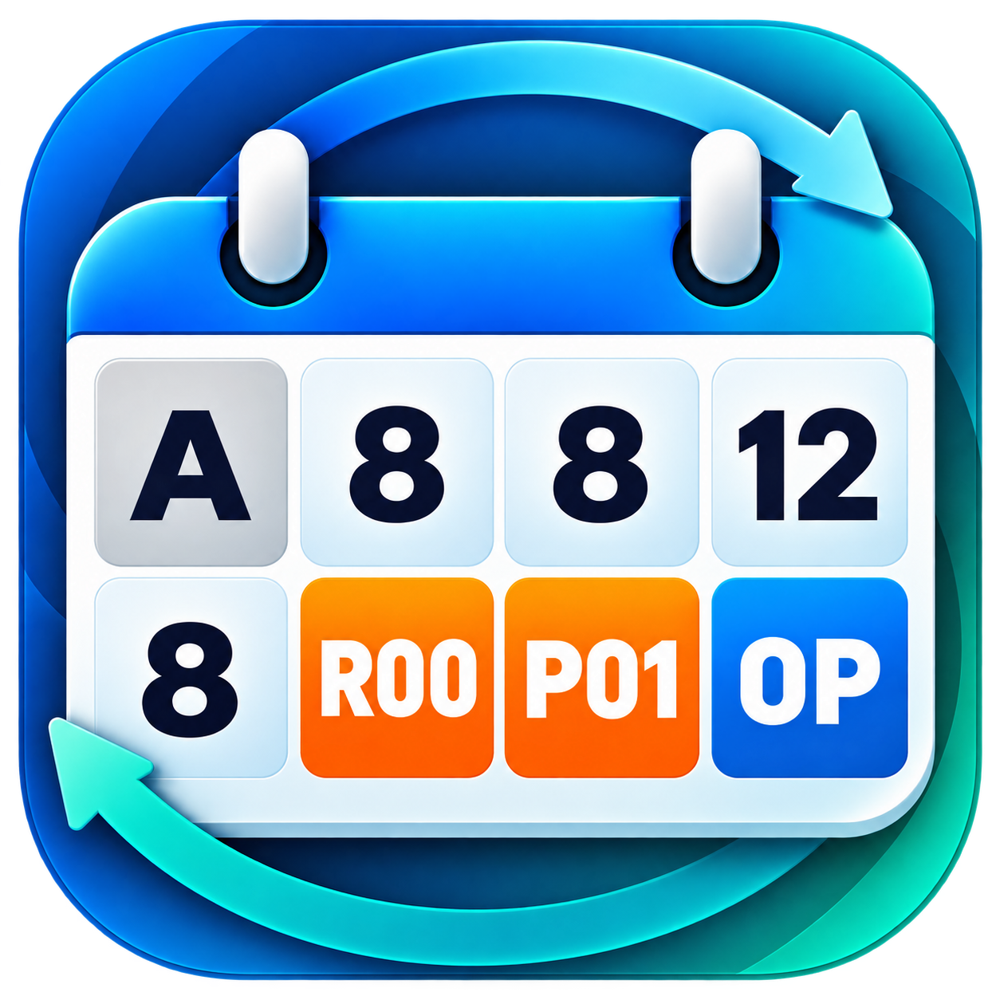

Je eigen shiftkalender
Kies je ploeg en sectie. Bekijk je diensten en uren, pas persoonlijke roosterdagen aan en herken Belgische feestdagen.

UmiShiftJOUW PLOEG. JOUW SECTIE. JOUW OVERZICHT.
Vroege, late of nacht? Met UmiShift staan je shifts, vrije dagen, afspraken en notities samen in je eigen kalender.
Voor Android
Ontdek UmiShift05:50 – 13:50
Een notitie of afspraak, bij de juiste dag.
VAN WERKROOSTER NAAR DAGPLANNING
Kies je ploeg en sectie. Bekijk je diensten en uren, pas persoonlijke roosterdagen aan en herken Belgische feestdagen.
Bewaar je plannen bij de juiste datum. Stel meldingen en wekkers voor je shifts in en kies zelf wat op jouw toestel actief is.
Bewaar een back-upbestand of koppel optioneel Google Drive voor back-ups, herstel en synchronisatie tussen je eigen toestellen.
Nodig iemand uit met een eigen Google-account. Kies per persoon of ook notities en afspraken zichtbaar zijn. Jij beheert de toegang.
BEWUST VERBONDEN
Je eigen kalender werkt lokaal. Google-aanmelding is nodig wanneer je Drive-back-ups, synchronisatie of kalenderdeling gebruikt. UmiShift vraagt daarvoor toegang tot zijn eigen back-upmap en tot bestanden die de app maakt of die je met de app opent.
VRAGEN OVER UMISHIFT?
Admin-UmiShift helpt je met vragen over de app, Google-aanmelding en je gegevens.